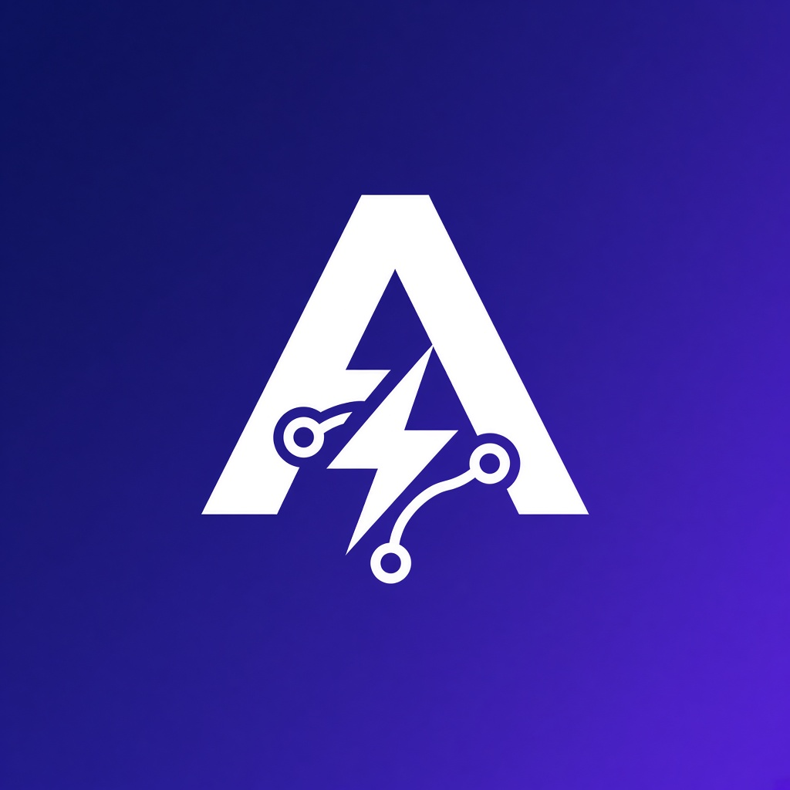
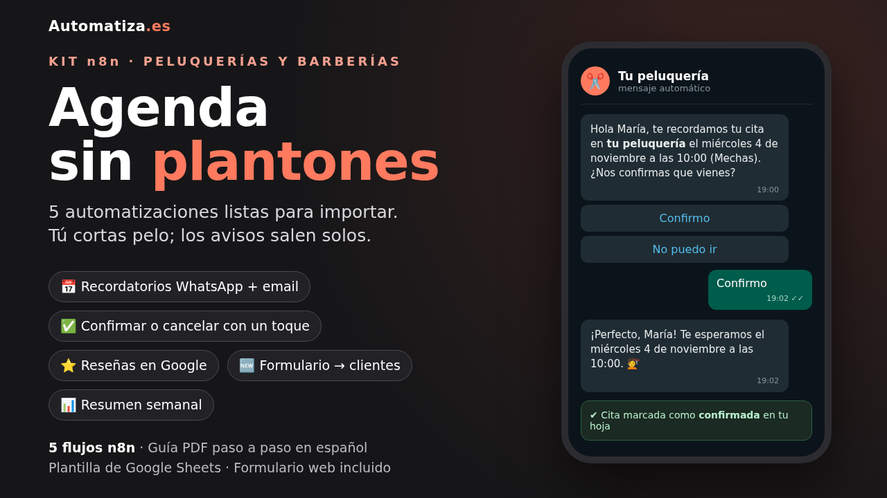

Automatiza.esEntre el 15 y el 25 % de las horas de una peluquería se pierden porque al cliente se le olvida la cita. Con un aviso el día antes se evitan la mayoría, y para eso no tienes que cambiar de agenda: si apuntas las citas en una hoja de Google, el aviso sale solo.
Descargar la plantilla gratis Ver el kit completo (39 €)
| Gratis | Kit completo | |
|---|---|---|
| Recordatorio por email 24 h antes | ✅ | ✅ |
| WhatsApp con botones "Confirmo / No puedo ir" | — | ✅ |
| Aviso inmediato de hueco libre si alguien cancela | — | ✅ |
| Petición de reseña en Google tras la visita | — | ✅ |
| Formulario de captación de clientes | — | ✅ |
| Resumen cada lunes y clientes que hace más de 45 días que no vienen | — | ✅ |
| Guía en PDF | 15 min | 14 páginas |
¿Necesito saber programar? No. Importas el archivo en n8n, rellenas un nodo con los datos de tu negocio y conectas tu Google y tu email. La guía te lleva paso a paso.
¿Qué es n8n? Una herramienta de automatización open source. Puedes instalarla en tu propio servidor o usar n8n Cloud.
¿Y el RGPD? Necesitas el consentimiento de tus clientes para enviarles avisos. La hoja incluye una columna para apuntarlo.
¿Sirve para barberías, estética o fisios? Sí, para cualquier negocio que trabaje con cita.